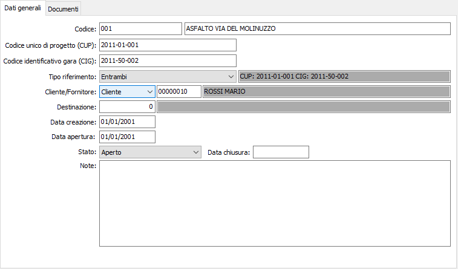
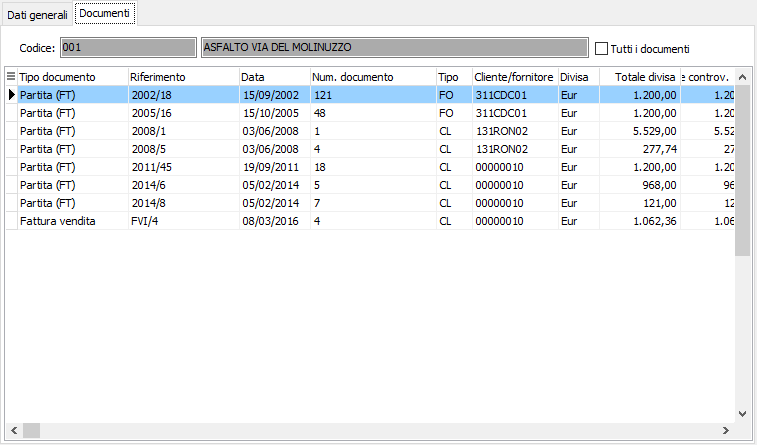

Riferimenti commesse pubbliche
La tabella “Riferimenti commesse pubbliche” contiene la codifica dei riferimenti al CIG/CUP e visualizzare i documenti assegnati alla commessa selezionata.

Per ogni commessa pubblica deve essere specificato, nel campo “Tipo riferimento”, se questa gestisce sia il codice unico di progetto (CUP) sia il codice identificativo gara (CIG), e devono quindi essere indicati i codici negli appositi campi. In base al tipo di riferimento impostato viene automaticamente gestita la descrizione assegnata alla commessa stessa che viene visualizzata accanto al campo “Tipo riferimento”.
Le commesse possono essere assegnate ad un cliente/fornitore, in tal caso l’assegnazione sarà possibile (salvo casi particolari analizzati successivamente) solo a documenti relativi al cliente/fornitore indicato; se nel campo iene inserito il valore nessuno, la commessa potrà essere assegnata ad un qualsiasi cliente/fornitore.
Oltre a questi dati sono presenti la data di creazione, la data di apertura, lo stato della commessa e la data di chiusura.

Nella linguetta “Documenti” verranno visualizzati i documenti assegnati alla commessa; la spunta su Tutti i documenti mostra anche quei documenti, ad esempi i ddt, da cui deriva il documento finale, ad esempio la fattura.